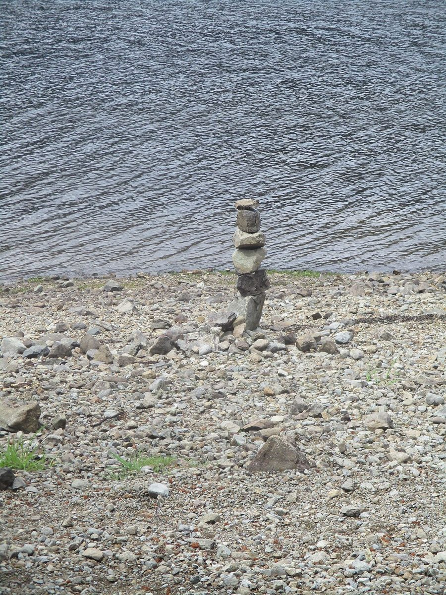

制作側の連想
「87wa」の数字と語感から考えたこと
屋号の由来は分かりません。ここから先は、制作側が数字と語感から連想したことです。8と7を足すと15。算数では足し算の答えを「和(わ)」と呼びます。そこで「87」と「wa」を並べて、そろばんで「八と七の和」を置いてみる、という作りにしました。八千代市の「八」とも重なりますが、これも制作側の連想です。お店の理念や由来とは無関係です。
珠を置く
五の珠と、一の珠。
そろばんの珠は、上に1つ(五)、下に4つ(一)。ここでは写真を珠に見立てて並べています。写真は八千代市のものではなく、国外・撮影地不明のフリー素材のイメージです。

梁




ご案内
お店のこと(確認できたものだけ)
| 所在地 | 〒276-0047 千葉県八千代市吉橋1348-1 |
|---|---|
| 電話 | なし |
| 営業時間 | 準備中 |
| 定休日 | 準備中 |
| ご予約 | 準備中 |
| 駐車場 | 準備中 |
| SNS | Instagram @87wa_cafe |